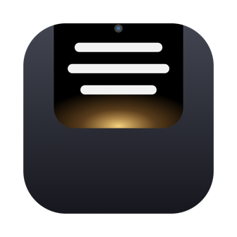

Stays out of screen shares
macOS keeps the prompter out of screenshots, recordings and shared screens.
Version 1.0, free and open source
EyeLine hangs your script from the notch, right below the lens, so you read while looking at the call. 790 KB, for macOS 14 or later.
Paste a script from the menu bar, set the speed and the text size, and the panel under the notch scrolls it. Click the words to pause, scroll on them to go back. See install steps
Thanks for joining, everyone. Today I'll walk you through what we shipped this month.
First, the new sign-up flow. Fewer steps, fewer drop-offs.
Second, search. Results now load while you type.
And third, the part I'm most excited about.
Thanks for joining, everyone.
Today I'll walk you through what we shipped this month.
First, the new sign-up flow. Fewer steps, fewer drop-offs.
Second, search. Results now load while you type.
And third, the part I'm most excited about.
Let me share my screen.
Thanks for joining, everyone.
Today I'll walk you through what we shipped this month.
A script in a second window pulls your gaze off the camera, and viewers notice. EyeLine keeps the words right below it.
macOS keeps the prompter out of screenshots, recordings and shared screens.
A warm light under the text rises with your voice and fades when you stop.
With voice pacing on, the script moves only while you talk, never during a breath.
Drag the corner and the panel grows from the notch, centred on the lens.
This first build is not notarized by Apple yet, so macOS asks you to allow it once.
Open EyeLine.dmg and drop the app on the Applications folder.
Under Privacy & Security, click Open Anyway next to EyeLine.
Allow it when asked. It powers the glow and voice pacing.
No. EyeLine asks macOS to keep its window out of screen capture. Try one test call in your meeting app before a big talk.
No. It reads how loud the microphone is, many times a second, and keeps nothing. The glow and pacing work from that number alone.
Version 1.0 is not notarized by Apple yet. Click Open Anyway in Privacy & Security once and it opens normally after that.
Yes. The panel hangs from the top edge of the screen, under the menu bar, in the same place.
Any Mac on macOS 14 Sonoma or later. One download runs on Apple silicon and Intel.
